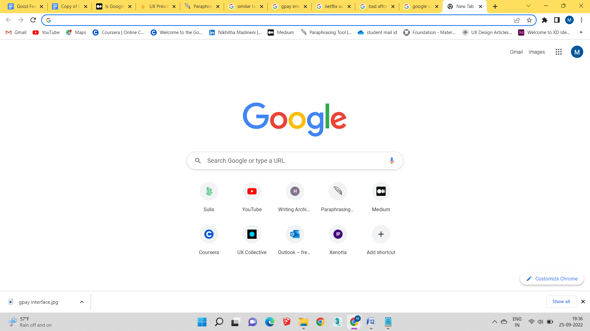

Design qualities in everyday objects
Good Mapping
Simple Identification On Which Tab We Are
When it comes to daily activities, everyone uses several websites like Google Chrome, Internet Explorer, Firefox, etc. I want to make a specific mention of the excellent icon and tab mapping seen in Google Chrome. Because it will always be evident which tab I am in, regardless of how many I have open. The importance of icons in user interfaces cannot be overstated. They are helpful in many ways and are compact. They turn into tiny navigational keys that are easy to use.

Furthermore, a huge benefit of using tabs is that Chrome has excellent solutions if any tabs are mistakenly closed. Or I can just press Control/Command + Shift + T to bring the most recent closed tab back up. Alternatively, I may look back in my history to view every site I've recently visited. There is surely a Chrome plugin to make things simpler if I need assistance taking notes, a better way to collaborate with colleagues, or some assistance with a crucial issue. Additionally, if I need it later, I can bookmark the tab and open it whenever I need it without having to hunt for it again. In conclusion, the Google Chrome Tabs has a nice mapping with subtle modifications like changing forms or utilizing various colours that made it easier for me to visual recognition and made it more user-friendly.
Bad Mapping
Similar Taps Confuse
This photo shows the sink and two identical faucets from a luxury hotel bathroom. It is possible that the hot and cold water taps will be mistaken for one another as a result. Even if I have had confusion while visiting hotels and other locations, I am still having problems because the situation is the same where I am going right now. Unfortunately, consumers have trouble telling the difference between hot and cold water even though the designer indicated a little change. The hot water tap could potentially cause burns on the hands of anyone who try to use the taps without understanding how to do so. This serves as an example of a product that was made in a certain way more for aesthetic reasons than for functional ones. Better would be for the taps' design to be stated in text or with various colors. avoiding uncertainty and being more user-friendly This may be employed by users who utilize it over an extended period of time, but in my opinion, the design is not user-friendly in such case. Although adults were involved, children or the elderly were harmed.
Furthermore, a huge benefit of using tabs is that Chrome has excellent solutions if any tabs are mistakenly closed. Or I can just press Control/Command + Shift + T to bring the most recent closed tab back up. Alternatively, I may look back in my history to view every site I've recently visited. There is surely a Chrome plugin to make things simpler if I need assistance taking notes, a better way to collaborate with colleagues, or some assistance with a crucial issue. Additionally, if I need it later, I can bookmark the tab and open it whenever I need it without having to hunt for it again. In conclusion, the Google Chrome Tabs has a nice mapping with subtle modifications like changing forms or utilizing various colours that made it easier for me to visual recognition and made it more user-friendly.
Good Affordance
Easy Use
Slide to unlock is a useful feature that we use every day while opening the phone. The fact that this is the simplest method to unlock the phone is helping me a lot more than the number lock or the pattern. It will only unlock with fingerprint access, hence in my opinion this is the most secure method of unlocking. In this era of cybercrime and when I need to use my phone urgently, it has been a huge help to me. To sum up, I believed it to be a nice convenience for daily activities because everyone will meet the lock system in some way in modern life and because of its user-friendly design.
Misleading Affordance
A Fake 3d Glass Break
For me, this specific affordance has frequently occurred. Because of the 3D glass shatter image's artificial affordance, which always gives the impression that something is breaking through the glass. Whether it is a real piece of broken glass or a 3D image was very difficult to determine. If somebody is observing the scenario from a distance, they might believe that a dog has been struck in the glass; however, if they are viewing it up close, they will realize that it is simply a sticker. The image above clearly demonstrates that a dog is out of the broken glass.
According to the current state of affairs, it has become fashionable not only for automobiles but also for structures. Wallpapers in rooms are using these stickers to make them look real. Although it appears stylish, how it affects individuals in real life depends on their perspective, particularly when it comes to youngsters, for whom it may be frightening because they are unable to discern whether something is real or not.
Good Feedback
Safe Transaction
As per my learnings, Feedback refers to the visible response that one gets from performing any interaction; it’s the confirmation that an action was performed. It informs the user that their input was received and is being acted upon - whether that action is successful or fails is also communicated

When I initially send money using Google Pay, it always asks me to turn on the location. I assume this is because the location is associated with my transaction. Following the transaction, the confirmation screen clearly states whether the transaction was successful. I enjoy that. And I receive a scratch-off card reward. although most of the time I receive "Better Luck Next Time”
My friends' names are already displayed in the main interface when I want to send them money because we have already transacted with them in the past, so I don't have to look up their phone numbers or name in my contact list. Because it's on my home screen, it's simple to find. Additionally, it asks for the UPI pin before proceeding with the transaction and displays the linked bank accounts along with the UPI ID; both feel secure and user-friendly. A notification that shows the amount that was deducted as well as the time it was sent will appear even after the transaction. By displaying all of these transactional details, I will be able to determine how much money was debited and how much was left in the account.
Bad Feedback
Confusing Interface And Non-Useful Icons
I frequently use the app google pay to make daily payments. Although there are user-friendly designs, there are certain issues that should be improved. As there are benefits like a simple method of money transfer or fantastic discounts and cash rewards. Cons include server troubles, transaction failures, frequent updates, a confusing user interface, too many options, and notification problems. The majority of problems are caused by backend services, but my experience was ruined by an unnoticeable UI.
The biggest issues I had with the app layout were that it suggests it would be better if the wallet money went into the connected account, and that having too many options causes confusion. Because of the positioning & frequent server issues, I frequently forget where my own QR code is. Additionally, I'm not even sure what some of the graphic icons, like the ricksaw and others, are for or how to use them. To conclude I thought this app was a little confusing as a result of these superfluous elements, and some of the icons were also useless
Good constrain
Netflix Icons Of Episodes & Audio Icons
I think that everyone in my generation uses Netflix since I no longer have to merely watch TV to access video content. Thanks to all these useful OTT services, I can stream videos on my tablet, computer, and mobile device. I use this app on my phone to watch my favorite Netflix series while I'm waiting in line or on the bus. Even on my Android phone, I have the fantastic option of utilizing the Netflix app to selectively change the brightness, which offers a wonderful experience
When using the Netflix app, there is a very user-friendly feature that allows me to adjust the screen brightness to suit my preference for the image. In addition to the brightness, the app has other useful features that make switching between episodes, audio tracks, and subtitles as well as moving to the next or previous episode simple. I can rapidly adjust the brightness and loudness to a level that won't irritate me, so I don't need to pause the video while I watch. These changes weren't very challenging or difficult. Additionally, I don't need to stop viewing because I can quickly adjust the brightness and loudness so that it doesn't bother me. It's not just cozy; sometimes I even feel better since, depending on the situation, the lighting in the video may be too bright or too dim, which may impair my vision. They have created icons and features with good affordance and simple recognition in order to avoid this kind of problem.
Lack of Constrain
Creating Their Own Path
As per my view i dont think this was a bad constrain but i think that it is a lack of constrain which the image clearly explains. To explain the picture, the actual path designed was different but the man ccreates his own path to reduce the distance. Even in my experience, i choose the same way in many scenarios because it reduces the distance of my way. Its not about the bad design but people always chooses the fastest way because no one wants to waste their time if there is a availability of shortest distance even though they waste it in different ways.
However, personally, where I previously worked in a company, the project I was working on was related to urban planning design, and what I learned was that they primarily focused on greenery or the design of the roads but they didn't mostly think about the needs of the users because our behavior was also strictly constrained to the office rules. I encountered this kind of lack of constraint situation in this manner.
My Learnings :
- Every design has both positive and negative features
- After doing research and gaining this knowledge, I am able to conclude that a certain product was created with this goal in mind
- Learned the distinctions between excellent and poor design.